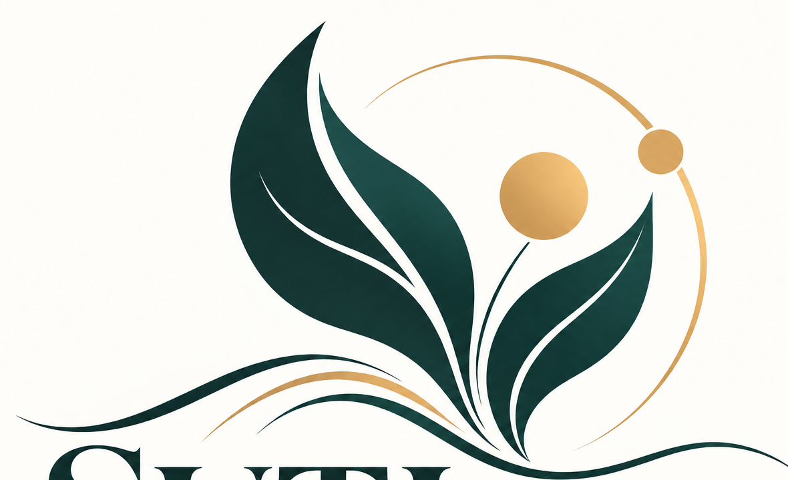

.angels · oferecer cuidado
Pergunte primeiro. Ofereça uma ajuda concreta, explique seus limites e deixe claro que a pessoa pode dizer “não”.

SUTI.worldInglês · edição original · Francês · tradução editorial · revisão independente pendente · Espanhol · tradução editorial · revisão independente pendente
SUTI · constelação do cuidado · edição editorial em português brasileiro
Um guia acolhedor para cuidar, se comunicar com clareza e escolher um pequeno passo. Leia, experimente, adapte, faça uma pausa ou encerre quando quiser.
Voltar ao espaço de cuidadoTrês funções diferentes
Estes nomes descrevem funções propostas para um projeto. Não significam que exista um serviço com equipe, um bot ativo ou uma rede conectada.
Pergunte primeiro. Ofereça uma ajuda concreta, explique seus limites e deixe claro que a pessoa pode dizer “não”.
Observe expressões que possam exercer pressão. Um sinal convida a revisar a mensagem; não rotula ninguém nem comprova intenções.
Antes de compartilhar, mostre quem receberá as informações, com qual finalidade, a mensagem exata, quais dados serão incluídos, por qual canal e por quanto tempo serão mantidos.
Mapa criativo opcional
Estes temas são convites criativos; não são um modelo universal, um diagnóstico nem uma afirmação sobre energia.
O que é concreto?
O que pode ser ajustado?
O que é importante para você?
Qual pequeno passo você escolhe?
Qual ritmo é confortável para você? Concentrar-se na respiração é opcional.
Escolha um formato, não um rótulo
Use um mapa prático para o apoio cotidiano. Não é necessário compartilhar informações sobre gravidez ou saúde.
Explore uma imagem ou história junto a uma pessoa adulta de confiança. Sem contas infantis, contatos privados ou conversas diretas com IA.
Experimente uma atividade breve e colaborativa, revisada por uma pessoa adulta. Sem pontuações públicas nem exposição de informações pessoais.
Antes de qualquer uso, um serviço voltado a adolescentes exige uma análise específica de proteção, consentimento, moderação, aspectos legais e dados.
Escolha um convite sobre idiomas, estudos, trabalho, relações ou espaços compartilhados. A participação é opcional.
Escolha letras maiores, leitura em voz alta, papel, um ritmo mais lento ou a companhia de alguém de confiança. Não presumimos capacidades.
Limites claros
Este conceito não diagnostica, não prescreve, não monitora mensagens nem contata alguém para pedir ajuda. Em questões sobre saúde, saúde sexual, gravidez, violência ou crise, pode ajudar a formular uma pergunta para um profissional local qualificado, escolhido pela própria pessoa. Não substitui atendimento profissional nem serviços locais de emergência.
Esta página não solicita nem armazena dados pessoais. A função `.hermes` não está conectada; nenhuma mensagem é enviada.
STATUS DO IDIOMA Tradução editorial para o português brasileiro; revisão independente pendente. As edições em outros idiomas continuam em revisão e não são apresentadas como aprovadas.